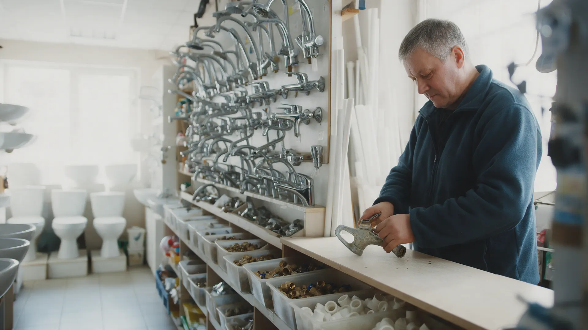
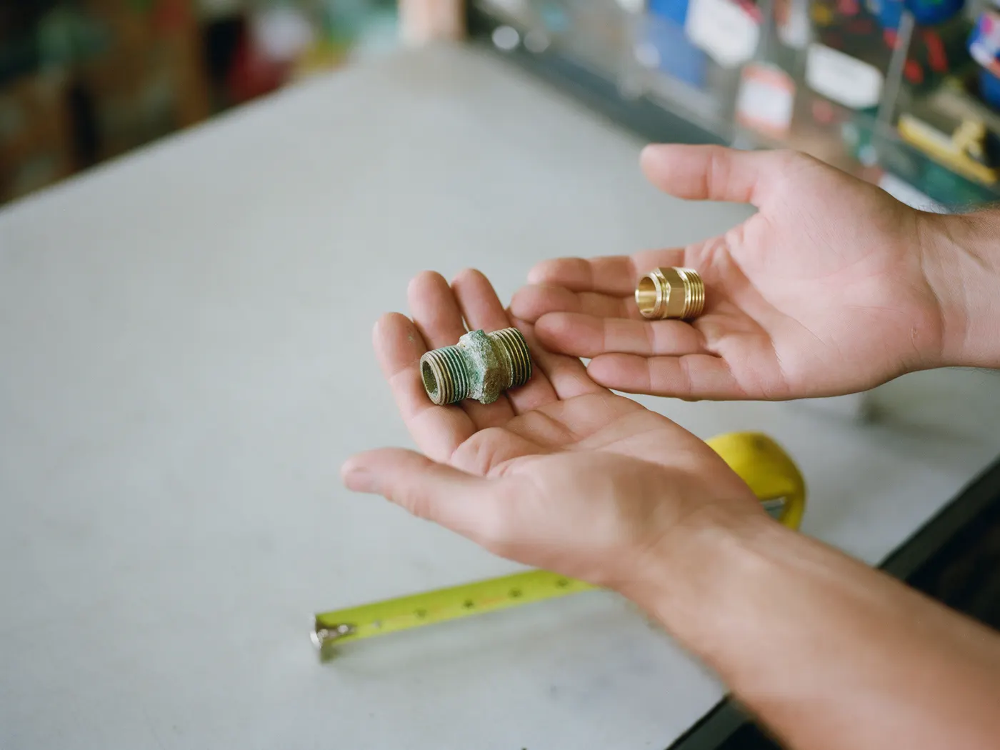
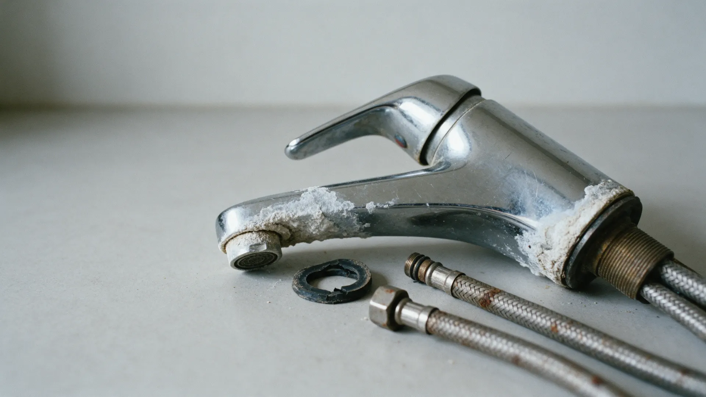
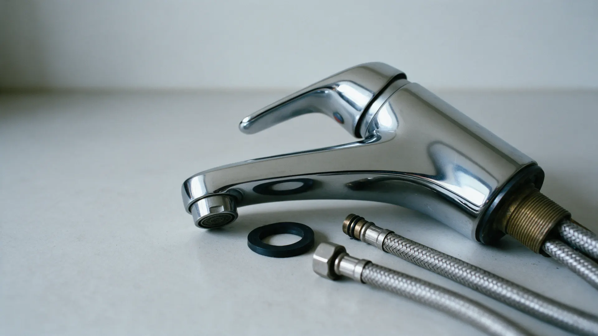
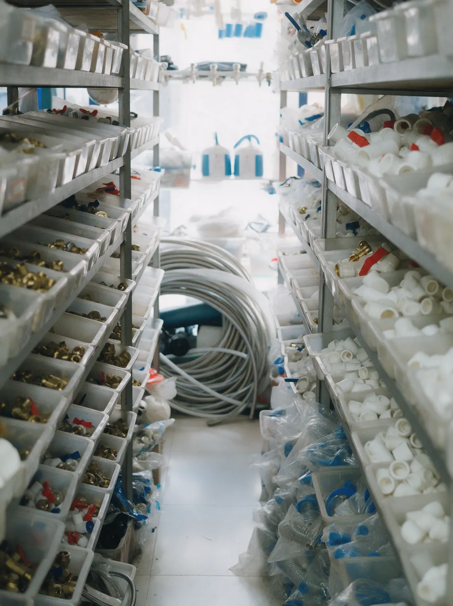

Магазин сантехники в вашем городе: подберём деталь по фото
Пришлите фото старого смесителя или фитинга – скажем, что подойдёт, есть ли в наличии, и отложим до вашего приезда.
Не та резьба – второй раз в магазин
Купили на глаз
Полдюйма или три четверти, внутренняя резьба или наружная – дома выясняется, что не встаёт. А воду уже перекрыли.
Заказали на маркетплейсе
Неделя ожидания, и потрогать нельзя. Не подошло – возврат, и снова ждать.
В гипермаркете не у кого спросить
Стоите у стенда со смесителями и сравниваете фото на телефоне с коробками.
Пришлите фото или принесите старую деталь – сверим и подберём такую же или лучше.



Сфотографируйте старую деталь
Целиком и крупно резьбу. Если рядом лежит рулетка – совсем хорошо.
Сверим резьбу, диаметр и размеры
Подберём такую же или лучше и скажем, что есть на полке, а что привезём.
Отложим – заберёте сегодня
Деталь ждёт вас на кассе. Старую можно взять с собой – сверим ещё раз при вас.
Что на полках
Для ремонта, замены и срочной починки. Нет нужного – закажем и сообщим, когда привезут.
Смесители и душ
Кухня, ванна, раковина. Картриджи, аэраторы и лейки к ним.
Трубы и фитинги
Полипропилен, металлопласт, нержавейка, канализация.
Унитазы, раковины, ванны
И всё для установки: гофры, крепёж, сифоны, арматура бачка.
Краны, фильтры, счётчики
Шаровые краны, фильтры грубой очистки, счётчики воды.
Отопление
Радиаторы, терморегуляторы, краны Маевского, комплектующие.
Подводка и мелочи
Гибкая подводка, прокладки, лён, фум-лента, герметики.

Новости магазина
Посты из нашей группы ВКонтакте появляются здесь сами. Выберите, что показывать.
Как купить
- ОтложимНапишите или позвоните – держим деталь на кассе до конца дня.
- СамовывозИз магазина: адрес магазина, часы работы.
- ДоставкаУсловия доставки по городу.
- ОплатаНаличные, карта, перевод.
- Не подошлоОбменяем или вернём деньги, если деталь не устанавливали и сохранили упаковку.
Пришлите фото старой детали
Ответим, что подойдёт и есть ли в наличии. Подходит – отложим до вашего приезда.